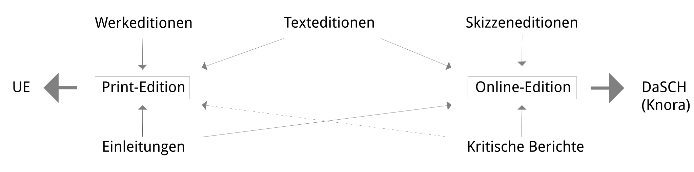

DE | ENCONTACT
The Anton Webern Gesamtausgabe is a historical-critical edition.
It is an historical
edition in that all the various extant versions of each work, including drafts, are being documented,
thus depicting the evolution of each individual work, while at the same time presenting their chronology
both within Webern’s own biography and within the general context of music history.
It is a critical
edition in that it compares and critically examines all available source material.
It is a complete
edition in that the entirety of Webern’s surviving compositions, including fragments, are documented and
edited.
It is a complete edition because any editing process necessarily involves
interpreting the given material, an interpretation which varies according to the use or purpose for
which it is intended.
The diverse interests of those potentially consulting the AWG have been
taken into account by conceptually dividing it into three different forms of edition (work edition, text
edition and sketch edition).
Accessibility is enabled through a hybrid approach: on the one
hand via printed volumes (print edition) from the Universal Edition in Vienna and on
the other hand via sheet music and material in digital form (online
edition), to which links on this website provide open access.
